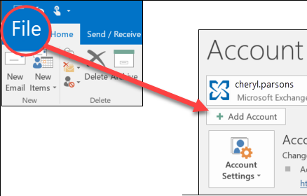
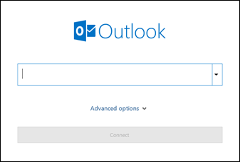

Adding your Crosby email to classic Outlook for Windows
Step-by-step walkthrough for connecting your @crosbydevelopment.com Workspace email to the classic Outlook desktop app (Outlook 2019 / 2021 / Microsoft 365).
Before you start
- The classic Outlook icon is a dark navy square with a white envelope/O. If your icon is a lighter, more colorful blue/teal, you're on the new Outlook — use the new Outlook guide instead.
- If you've never had Crosby email on this PC, skip Phase 1 and go straight to Phase 2.
- If your old @crosbydevelopment.com account is already in Outlook (connecting through Rackspace), do Phase 1 first to remove it.
Phase 1 — Remove the old account (skip if you've never set up Crosby email here)
Open the File menu
In Outlook, click File in the very top-left corner of the window.

Account Settings → Account Settings
On the Info page, click Account Settings ▾, then click Account Settings… in the dropdown.
Select the old account
The Email tab lists your accounts. Click on the one labeled yourname@crosbydevelopment.com with IMAP/SMTP or POP/SMTP in the Type column.
Click Remove
With the account selected, click Remove at the top of the list. Confirm by clicking Yes.
Phase 2 — Add your Workspace account
Click New on the Email tab
Still in the Account Settings window, click New… at the top.
Enter your Crosby email
An "Add Account" window opens with the Outlook logo and a single email box. Type your full address — yourname@crosbydevelopment.com — and click Connect.

Sign in with Google
Outlook detects that this is a Google account and pops open the Google sign-in window. Your email is filled in — click the blue Next button.

Enter your password
Type your Workspace password and click Next. If 2FA is on, complete the verification (text code, phone tap, or authenticator app).

Grant access to Microsoft Outlook
Google shows a list of permissions Outlook is requesting. Scroll to the bottom and click Continue or Allow.
Confirm success
Outlook returns to a screen that says "Account successfully added". Click Done.
Send a test email
Click New Email, send a quick message to yourself or a coworker, and confirm it arrives.
Troubleshooting
| Symptom | Fix |
|---|---|
| "IMAP Account Settings" window appears instead of Google sign-in | Outlook is too old to use modern Google sign-in. Update Outlook (File → Office Account → Update Options), then try again. |
| "Couldn't find your Google Account" | Check spelling. If still failing, the Workspace account may not be ready yet — call us. |
| "Application-specific password required" | Same fix as the IMAP window above — your Outlook needs an update. |
| Old emails missing | Google backfills history in the background. Give it through the weekend. |
| Folders look strange (e.g., [Gmail]/All Mail) | That's how Gmail's folder system maps into Outlook. You can leave it as-is or hide folders you don't use. |